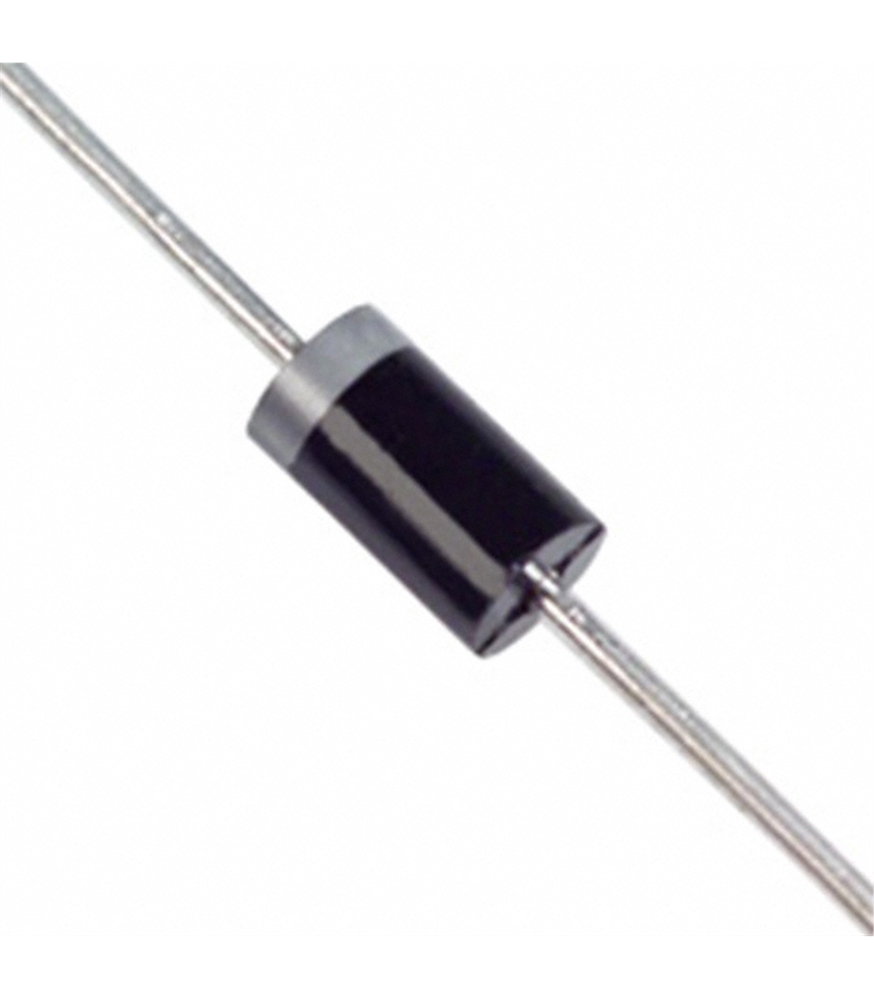

Diodos
-
O diodo é um componente elétrico que permite a passagem de corrente num sentido com muito mais facilidade do que no outro.
-
Tipos de Diodos
- Diodos Retificadores
- Díodo Retificador de Silício: Utilizado principalmente para converter corrente alternada (AC) em corrente contínua (DC).
- Díodo Retificador de Germânio: Tem uma menor queda de tensão direta. É utilizado em aplicações de baixa tensão.
- Diodos Zener
- Díodo Zener: Utilizado em circuitos de regulação de tensão, permite a passagem de corrente reversa quando a tensão atinge um valor específico.
- Diodos Schottky
- Díodo Schottky: Caracteriza-se pela sua baixa queda de tensão direta e rápida recuperação, utilizado em aplicações de alta velocidade e baixa tensão.
- Diodos LED (Light Emitting Diode)
- LED: Emite luz quando uma corrente passa por ele, utilizado em ecrãs, iluminação e indicadores.
- OLED (Organic LED): Utilizado em ecrãs e iluminação devido à sua flexibilidade e eficiência.
- Diodos Laser
- Díodo Laser: Emite luz coerente e é utilizado em aplicações como leitura de discos ópticos e comunicação de fibra óptica.
- FotoDiodos
- Fotodíodo: Converte luz em corrente elétrica, utilizado em sensores de luz, fotómetros e sistemas de comunicação óptica.
- Diodos de Avalancha
- Díodo de Avalancha: Utilizado em circuitos de proteção contra sobretensões, opera em regime de avalancha para limitar tensões excessivas.
- Diodos Varicap (ou Varactor)
- Díodo Varicap: Utilizado em circuitos de sintonia. A capacidade varia com a tensão aplicada.
- Diodos Tunnel
- Díodo Tunnel: Utilizado em aplicações de alta frequência e como amplificador de baixa tensão devido à sua característica de tunelamento.
- Diodos Gunn
- Díodo Gunn: Utilizado em dispositivos de geração de micro-ondas, como osciladores e amplificadores de micro-ondas.
- Diodos PIN
- Díodo PIN: Possui uma região intrínseca entre as regiões p e n, utilizado em aplicações de radiofrequência e alta frequência.
- Diodos TVS (Transient Voltage Suppression)
- Díodo TVS: Utilizado para proteger circuitos contra picos de tensão transientes.
- Diodos de Recuperação Rápida
- Díodo de Recuperação Rápida: Projetado para ter um tempo de recuperação curto, utilizado em conversores de potência e retificação de alta frequência.
- Diodos Específicos para Micro-ondas
- Díodo IMPATT: Utilizado em geradores de micro-ondas e amplificadores.
- Díodo TRAPATT: Utilizado em aplicações de micro-ondas, similar ao díodo IMPATT, mas com diferentes características de operação.